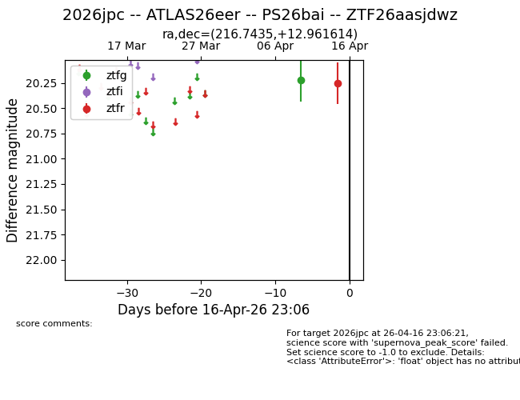
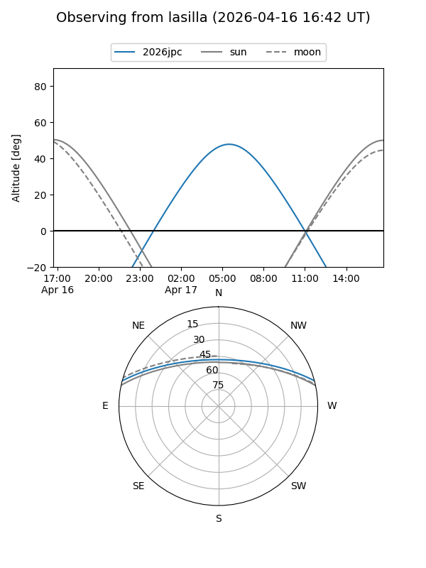
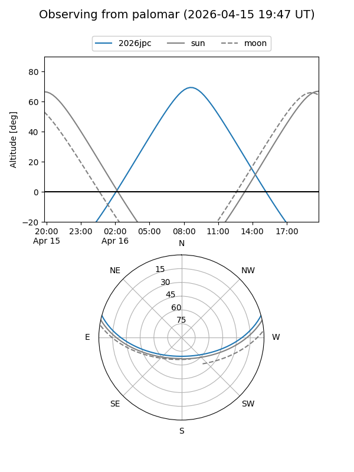
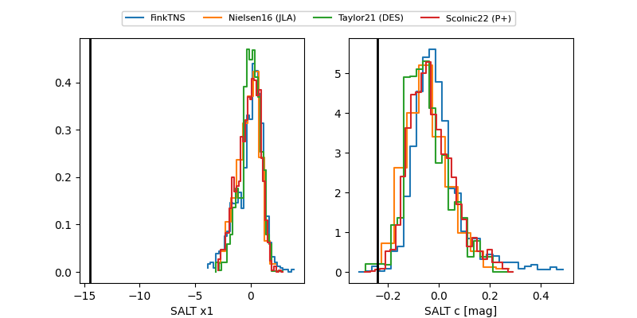

2026jpc
Target 2026jpc at 2026-04-16 23:12
Aliases and brokers:
FINK: link
Lasair: link
ALeRCE: link
TNS: link
YSE: link
alt names
ZTF26aasjdwz (ztf,fink_ztf)
2026jpc (tns,yse)
ATLAS26eer (atlas)
PS26bai (panstarrs)
Coordinates:
equatorial (ra, dec) = 216.7435,+12.96161
equatorial (HMS+DMS) = 14:26:58.45,+12:57:41.81
galactic (l, b) = (5.2848,+63.54920)
Flags:
Photometry:
last ztfg=20.22, ztfr=20.25
1 ztfg, 1 ztfr detections
Lightcurve

Visibility


Additional plots
